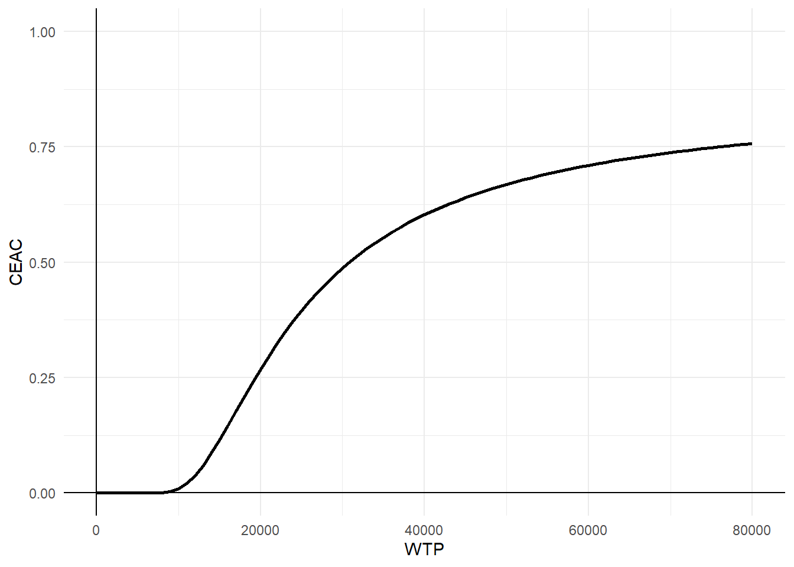

![]()
set.seed(768)
n <- 200
id <- seq(1:n)
Tr <- c(rep(0, 106),rep(1, 94))
age <- rnorm(n, 50, 17)
sex <- rbinom(n, 1, 0.4)
beta0_u0 <- 0.3
beta1_u0 <- 0.1
u0 <- 1 - (beta0_u0 + beta1_u0*Tr + rgamma(n, 0.1, 2.5))
beta0_c0 <- 0.1
beta1_c0 <- 0.25
beta2_c0 <- -0.2
c0 <- beta0_c0 + beta1_c0*Tr + beta2_c0*(u0 - mean(u0)) + rgamma(n, 0.1, 2.5)
beta0_u1 <- 0.6
beta1_u1 <- 0.1
beta2_u1 <- -0.6
beta3_u1 <- 0.2
u1 <- 1 - (beta0_u1 + beta1_u1*Tr + beta2_u1*(c0 - mean(c0)) + beta3_u1*(u0 - mean(u0)) + rgamma(n, 0.5, 2))
beta0_c1 <- 0.2
beta1_c1 <- 0.25
beta2_c1 <- -0.2
beta3_c1 <- 0.2
c1 <- beta0_c1 + beta1_c1*Tr + beta2_c1*(u1 - mean(u1)) + beta2_c1*(c0 - mean(c0)) + rgamma(n, 0.1, 2.5)
beta0_u2 <- 0.6
beta1_u2 <- 0.1
beta2_u2 <- -0.6
beta3_u2 <- 0.2
u2 <- 1 - (beta0_u2 + beta1_u2*Tr + beta2_u2*(c1 - mean(c1)) + beta3_u2*(u1 - mean(u1)) + rgamma(n, 0.5, 2))
beta0_c2 <- 0.2
beta1_c2 <- 0.25
beta2_c2 <- -0.2
beta3_c2 <- 0.2
c2 <- beta0_c2 + beta1_c2*Tr + beta2_c2*(u2 - mean(u2)) + beta2_c2*(c1 - mean(c1)) + rgamma(n, 0.1, 2.5)
beta0_u3 <- 0.6
beta1_u3 <- 0.1
beta2_u3 <- -0.6
beta3_u3 <- 0.2
u3 <- 1 - (beta0_u3 + beta1_u3*Tr + beta2_u3*(c2 - mean(c2)) + beta3_u3*(u2 - mean(u2)) + rgamma(n, 0.5, 2))
beta0_c3 <- 0.3
beta1_c3 <- 0.25
beta2_c3 <- -0.2
beta3_c3 <- 0.2
c3 <- beta0_c3 + beta1_c3*Tr + beta2_c3*(u3 - mean(u3)) + beta2_c3*(c2 - mean(c2)) + rgamma(n, 0.1, 2.5)
beta0_u4 <- 0.8
beta1_u4 <- 0.1
beta2_u4 <- -0.4
beta3_u4 <- 0.3
u4 <- 1 - (beta0_u4 + beta1_u4*Tr + beta2_u4*(c3 - mean(c3)) + beta3_u4*(u3 - mean(u3)) + rgamma(n, 0.01, 1.5))
beta0_c4 <- 0.3
beta1_c4 <- 0.25
beta2_c4 <- -0.2
beta3_c4 <- 0.2
c4 <- beta0_c3 + beta1_c3*Tr + beta2_c3*(u4 - mean(u4)) + beta2_c3*(c3 - mean(c3)) + rgamma(n, 0.1, 2.5)
data_sim_ec <- data.frame(id, age, sex, Tr, u0, c0, u1, c1, u2, c2, u3, c3, u4, c4)
data_sim_ec$c0 <- data_sim_ec$c0*1000
data_sim_ec$c1 <- data_sim_ec$c1*1000
data_sim_ec$c2 <- data_sim_ec$c2*1000
data_sim_ec$c3 <- data_sim_ec$c3*1000
data_sim_ec$c4 <- data_sim_ec$c4*1000
data_sim_ec <- data_sim_ec[sample(1:nrow(data_sim_ec)), ]A tutorial on using R to conduct trial-based CEA
Quarto
R
Academia
health economics
Hello dear readers, here I am with a new post about using statistics in health economic evaluations. Today I want to take a break from the quick examples I gave on using Bayesian methods in CEA and instead focus on the research work of Ben at al. (2023) entitled Conducting Trial‑Based Economic Evaluations Using R: A Tutorial, which has been recently published on PharmacoEconomics. I was very intrigued by this publication as last year I had the pleasure to meet and discuss in person with the main author of the paper, who seemed to be well aware and knowledgeable about the importance of using adequate statistical methods in trial-based CEA. From a first look at the paper I can already tell the the content is super relevant in that it provides some concrete examples and lines of code to implement what is now considered the “standard” approach to perform trial-based CEA, taking into account most of the typical complexities that affect CEA data. However, I thought having a quick review of the paper here would be the perfect chance for me to dive into the details of the methods proposed by the author and discuss their perspective and key points.
The paper is constructed in the form of a step-by-step tutorial on performing trial-based CEA using a variety of methods to account for possible issues affecting the data. To demonstrate how the methods can be applied in practice, they simulate a fake RCT dataset of 200 people (106 in the control and 94 in the intervention) together with other baseline variables that include age, sex, utility scores and costs. The construct a treatment variable Tr denoting whether individuals were assigned to the control (0) or intervention (1) group, and generate follow-up outcome variables for both utilities and costs for 3, 6, 9 and 12 months. Finally, they introduce missingness in all outcome follow-up variables according to a missing at random (MAR) assumption, where the chance of missingness is made dependent on the observed baseline variables age and sex. Key characteristics of the data that they outlined as important to take into account, and which are typical of most CEAs, include: presence of missing outcome data in both effectiveness and cost post-randomisation variables, high degrees of skewness for all outcome variables, presence of a correlation between utilities and costs, and presence of imbalances between the groups in some baseline variables. To tackle these issues within a single analysis, as it often occurs in practice, they suggest the use of well-known approaches in the literature, including the use of multiple imputation to handle MAR missingness, non-parametric bootstrapping to handle non-normality, seemingly unrelated regression methods to capture correlations, and regression adjustment approaches to account for baseline imbalances. Although all these methods are well known in the literature, they are hardly used jointly in a real analysis, even in the presence of all these data features, possibly because of the lack of knowledge of expertise needed in order to implement such approaches in standard software. Because of this, I really think this paper provides some useful and very heplful indications and guidelines to readers interested in these analyses and warn them about the pitfalls of relying on the use of simpler but likely inadequate methods (e.g. simply discarding missing cases or ad-hoc imputing missing values instead of accounting for properly missingness uncertainty).
For the purpose of this post, I will simulate my own dataset and apply the methods the author proposed to the newly generated data, so keep in mind that results will not be the same as those obtained by the authors using their own simulated data. So, let’s start with simulating a multivariate non-normal outcome variables (utilities and costs) for 200 people at multiple time points (time 0, 1, 2, 3, 4). To simulate these types of outcomes, for example, I can rely on Gamma distributions and link these distributions to each other through a regression to the mean approach in order to ensure some degree of correlation between each pair of variables. As for the temporal association, we can assume a first-order autoregressive structure to simplify the simulation of the data.
We can now inspect the empirical distributions of the two outcomes by treatment group to have an idea of the level of the associated skewness and examine correlation coefficients to see what type of association we should expect to find. For example, let’s examine the pair of u and c variables at time 4:
#scatterplot of e and c data by group
library(ggplot2)
data_sim_ec$Trf <- factor(data_sim_ec$Tr)
levels(data_sim_ec$Trf) <- c("old","new")
data_sim_ec$Trf <- factor(data_sim_ec$Tr)
levels(data_sim_ec$Trf) <- c("old","new")
u4_hist <- ggplot(data_sim_ec, aes(x=u4))+
geom_histogram(color="black", fill="grey")+
facet_grid(Trf ~ .) + theme_classic()
c4_hist <- ggplot(data_sim_ec, aes(x=c4))+
geom_histogram(color="black", fill="grey")+
facet_grid(Trf ~ .) + theme_classic()
gridExtra::grid.arrange(u4_hist, c4_hist, nrow = 1, ncol = 2)With a correlation coefficient between the two variables of -0.1962025. Next, we need to introduce some missing values at all follow-up times, using a MAR mechanism dependent on age and sex. We can accomplish this using a series of logistic regression using as outcome the missingness indicator for the corresponding outcome variable and including into those regressions age and sex as predictors. We then need to play around with the regression coefficients to obtain desired amount of missing values for each variable.
set.seed(768)
library(boot)
n <- 200
gamma0_u1 <- -1.3
gamma1_u1 <- 0.5
gamma2_u1 <- 0.5
pi_u1 <- inv.logit(gamma0_u1 + gamma1_u1*(age/100) + gamma2_u1*sex)
m_u1 <- rbinom(n, 1, pi_u1)
gamma0_c1 <- -1.3
gamma1_c1 <- 0.5
gamma2_c1 <- 0.5
pi_c1 <- inv.logit(gamma0_c1 + gamma1_c1*(age/100) + gamma2_c1*sex)
m_c1 <- rbinom(n, 1, pi_c1)
gamma0_u2 <- -1
gamma1_u2 <- 0.5
gamma2_u2 <- 0.5
pi_u2 <- inv.logit(gamma0_u2 + gamma1_u2*(age/100) + gamma2_u2*sex)
m_u2 <- rbinom(n, 1, pi_u1)
gamma0_c2 <- -1
gamma1_c2 <- 0.5
gamma2_c2 <- 0.5
pi_c2 <- inv.logit(gamma0_c2 + gamma1_c2*(age/100) + gamma2_c2*sex)
m_c2 <- rbinom(n, 1, pi_c2)
gamma0_u3 <- -0.5
gamma1_u3 <- 0.5
gamma2_u3 <- 0.5
pi_u3 <- inv.logit(gamma0_u3 + gamma1_u3*(age/100) + gamma2_u3*sex)
m_u3 <- rbinom(n, 1, pi_u3)
gamma0_c3 <- -0.5
gamma1_c3 <- 0.5
gamma2_c3 <- 0.5
pi_c3 <- inv.logit(gamma0_c3 + gamma1_c3*(age/100) + gamma2_c3*sex)
m_c3 <- rbinom(n, 1, pi_c3)
gamma0_u4 <- 0
gamma1_u4 <- 0.5
gamma2_u4 <- 0.5
pi_u4 <- inv.logit(gamma0_u4 + gamma1_u4*(age/100) + gamma2_u4*sex)
m_u4 <- rbinom(n, 1, pi_u4)
gamma0_c4 <- 0
gamma1_c4 <- 0.5
gamma2_c4 <- 0.5
pi_c4 <- inv.logit(gamma0_c4 + gamma1_c4*(age/100) + gamma2_c4*sex)
m_c4 <- rbinom(n, 1, pi_c4)
u1 <- ifelse(m_u1==1,NA,u1)
c1 <- ifelse(m_c1==1,NA,c1)
u2 <- ifelse(m_u2==1,NA,u2)
c2 <- ifelse(m_c2==1,NA,c2)
u3 <- ifelse(m_u3==1,NA,u3)
c3 <- ifelse(m_c3==1,NA,c3)
u4 <- ifelse(m_u4==1,NA,u4)
c4 <- ifelse(m_c4==1,NA,c4)
data_sim_ec_obs <- data.frame(id, Tr, age, sex, u0, c0, u1, c1, u2, c2, u3, c3, u4, c4)
data_sim_ec_obs$c0 <- data_sim_ec_obs$c0*1000
data_sim_ec_obs$c1 <- data_sim_ec_obs$c1*1000
data_sim_ec_obs$c2 <- data_sim_ec_obs$c2*1000
data_sim_ec_obs$c3 <- data_sim_ec_obs$c3*1000
data_sim_ec_obs$c4 <- data_sim_ec_obs$c4*1000We can inspect the data through the command “summary” in order to have an idea about the number and proportions of missing values for each variable in our dataset.
summary(data_sim_ec_obs) id Tr age sex
Min. : 1.00 Min. :0.00 Min. : 5.697 Min. :0.000
1st Qu.: 50.75 1st Qu.:0.00 1st Qu.: 40.261 1st Qu.:0.000
Median :100.50 Median :0.00 Median : 50.613 Median :0.000
Mean :100.50 Mean :0.47 Mean : 50.345 Mean :0.405
3rd Qu.:150.25 3rd Qu.:1.00 3rd Qu.: 60.196 3rd Qu.:1.000
Max. :200.00 Max. :1.00 Max. :102.607 Max. :1.000
u0 c0 u1 c1
Min. :-0.4017 Min. : 83.03 Min. :-1.45341 Min. : -94.59
1st Qu.: 0.5993 1st Qu.: 85.08 1st Qu.:-0.02676 1st Qu.: 211.69
Median : 0.6000 Median : 323.86 Median : 0.24521 Median : 363.23
Mean : 0.6152 Mean : 248.09 Mean : 0.11125 Mean : 351.79
3rd Qu.: 0.6997 3rd Qu.: 356.89 3rd Qu.: 0.32320 3rd Qu.: 438.14
Max. : 0.7000 Max. :1131.00 Max. : 0.69507 Max. :1059.01
NA's :68 NA's :47
u2 c2 u3 c3
Min. :-1.69971 Min. :-346.4 Min. :-1.82613 Min. : 110.7
1st Qu.:-0.11202 1st Qu.: 208.7 1st Qu.:-0.12191 1st Qu.: 327.5
Median : 0.17524 Median : 331.9 Median : 0.15356 Median : 447.7
Mean : 0.04501 Mean : 348.4 Mean : 0.03382 Mean : 454.9
3rd Qu.: 0.27519 3rd Qu.: 441.6 3rd Qu.: 0.27746 3rd Qu.: 529.4
Max. : 1.20925 Max. :1173.7 Max. : 0.92052 Max. :1528.8
NA's :72 NA's :81 NA's :96 NA's :99
u4 c4
Min. :-0.26983 Min. : 121.7
1st Qu.: 0.05507 1st Qu.: 340.5
Median : 0.13413 Median : 422.7
Mean : 0.14381 Mean : 463.7
3rd Qu.: 0.20350 3rd Qu.: 572.4
Max. : 0.84580 Max. :1153.8
NA's :124 NA's :123 We have finally generated our partially-observed CEA dataset and we proceed now to implement the methods described in Ben at el. (2023) to perform the economic evaluation.
Step 1 Imputation
First, the problem of missing values is handled via multiple imputation techniques separately by treatment arm, with particular reference to its multiple imputation by chained equations version. This is typically the type of MI methods used due to the simplicity of implementation (based on univariate regression approaches) and its flexibility in dealing with data-specific features such as high levels of skewness. Indeed, at the imputation step, an imputation model is created using the predictive mean matching approach which allows to preserves the features of the data you are trying to impute (the basic idea is that imputations are generated based on some sampling with replacement approach from the observed data). I this way, M=5 imputed datasets are created and then aggregated quantities in terms of effectiveness (e.g. QALYs) and costs are generated by combining the imputations for each imputed outcome variable across datasets. In my example, since missingness only depends on age and sex, I remove all outcome variables as predictors from the imputation models to simplify the implementation. In general, since MAR cannot be tested, it is always wise to include as many observed variables as possible as predictors in the imputation model.
library(mice)
Tr0 <- subset(data_sim_ec_obs, Tr==0)
Tr1 <- subset(data_sim_ec_obs, Tr==1)
pred.Mat <- make.predictorMatrix(data_sim_ec_obs)
pred.Mat[,c("Tr","id","u1","c1","u2","c2","u3","c3","u4","c4")] <- 0
imp.Tr0 <- mice(Tr0, m=5, method = "pmm", predictorMatrix = pred.Mat, seed = 678)
iter imp variable
1 1 u1 c1 u2 c2 u3 c3 u4 c4
1 2 u1 c1 u2 c2 u3 c3 u4 c4
1 3 u1 c1 u2 c2 u3 c3 u4 c4
1 4 u1 c1 u2 c2 u3 c3 u4 c4
1 5 u1 c1 u2 c2 u3 c3 u4 c4
2 1 u1 c1 u2 c2 u3 c3 u4 c4
2 2 u1 c1 u2 c2 u3 c3 u4 c4
2 3 u1 c1 u2 c2 u3 c3 u4 c4
2 4 u1 c1 u2 c2 u3 c3 u4 c4
2 5 u1 c1 u2 c2 u3 c3 u4 c4
3 1 u1 c1 u2 c2 u3 c3 u4 c4
3 2 u1 c1 u2 c2 u3 c3 u4 c4
3 3 u1 c1 u2 c2 u3 c3 u4 c4
3 4 u1 c1 u2 c2 u3 c3 u4 c4
3 5 u1 c1 u2 c2 u3 c3 u4 c4
4 1 u1 c1 u2 c2 u3 c3 u4 c4
4 2 u1 c1 u2 c2 u3 c3 u4 c4
4 3 u1 c1 u2 c2 u3 c3 u4 c4
4 4 u1 c1 u2 c2 u3 c3 u4 c4
4 5 u1 c1 u2 c2 u3 c3 u4 c4
5 1 u1 c1 u2 c2 u3 c3 u4 c4
5 2 u1 c1 u2 c2 u3 c3 u4 c4
5 3 u1 c1 u2 c2 u3 c3 u4 c4
5 4 u1 c1 u2 c2 u3 c3 u4 c4
5 5 u1 c1 u2 c2 u3 c3 u4 c4imp.Tr1 <- mice(Tr1, m=5, method = "pmm", predictorMatrix = pred.Mat, seed = 678)
iter imp variable
1 1 u1 c1 u2 c2 u3 c3 u4 c4
1 2 u1 c1 u2 c2 u3 c3 u4 c4
1 3 u1 c1 u2 c2 u3 c3 u4 c4
1 4 u1 c1 u2 c2 u3 c3 u4 c4
1 5 u1 c1 u2 c2 u3 c3 u4 c4
2 1 u1 c1 u2 c2 u3 c3 u4 c4
2 2 u1 c1 u2 c2 u3 c3 u4 c4
2 3 u1 c1 u2 c2 u3 c3 u4 c4
2 4 u1 c1 u2 c2 u3 c3 u4 c4
2 5 u1 c1 u2 c2 u3 c3 u4 c4
3 1 u1 c1 u2 c2 u3 c3 u4 c4
3 2 u1 c1 u2 c2 u3 c3 u4 c4
3 3 u1 c1 u2 c2 u3 c3 u4 c4
3 4 u1 c1 u2 c2 u3 c3 u4 c4
3 5 u1 c1 u2 c2 u3 c3 u4 c4
4 1 u1 c1 u2 c2 u3 c3 u4 c4
4 2 u1 c1 u2 c2 u3 c3 u4 c4
4 3 u1 c1 u2 c2 u3 c3 u4 c4
4 4 u1 c1 u2 c2 u3 c3 u4 c4
4 5 u1 c1 u2 c2 u3 c3 u4 c4
5 1 u1 c1 u2 c2 u3 c3 u4 c4
5 2 u1 c1 u2 c2 u3 c3 u4 c4
5 3 u1 c1 u2 c2 u3 c3 u4 c4
5 4 u1 c1 u2 c2 u3 c3 u4 c4
5 5 u1 c1 u2 c2 u3 c3 u4 c4imp <- rbind(imp.Tr0,imp.Tr1)
impdat <- complete(imp, action = "long", include = FALSE)
M <- imp[["m"]]
impdat$Tcosts <- (impdat$c1 + impdat$c2 + impdat$c3 + impdat$c4)
impdat$QALY <- 1/2*(((impdat$u0 + impdat$u1)*0.25) + (impdat$u1 + impdat$u2)*0.25 + (impdat$u2 + impdat$u3)*0.25 + ((impdat$u3 + impdat$u4)*0.25))
impdata <- split(impdat, f = impdat$.imp)One thing that the authors do not mention at this point, which however I think can be quite important, is the need to check convergence of the algorithm behind mice since this is essentially based on the same iterative approach of Markov Chain Monte Carlo methods used for Bayesian inference. The main point being that, in case of potential issues in convergence, then results may change depending on how many iterations you decide to run the model before “sampling” from it the imputations. See here for a detailed explanation from the creator of mice, prof. Stef van Buuren, of why this is important to do and the different tools that can be used to do these checks. Some examples of diagnostic tools available in mice to check possible issues in the convergence of the algorithm: the plot function, by default showing the mean and variance of the imputations as a hint of the behaviour of the algorithm; the stripplot and densityplot function, respectively dedicated to compare the distributions and the kernel density estimates of imputed vs observed data.
plot(imp.Tr0)stripplot(imp.Tr0)densityplot(imp.Tr0)Typically, when using imputation methods such as pmm and not too many predictors in the imputation model, these checks are more a formality since the algorithm should not have big problems in the convergence or in generating weird imputations. However, I would say it is always a good idea to checks these before looking at the results based on the imputed data.
Step 2 Model fitting
Next, we proceed to use a non-parametric bootstrap procedure in combination with a SUR approach fitted at the level of the imputed QALY and TCost variables. These methods, implemented through the boot and systemfit package, account for the skewness of the imputed/observed data as well as the correlation between the outcome variables. These are very typical features of trial-based CEA data which need to be taken into account. In addition, the modelling framework granted by SUR allows the inclusion of predictors into the analysis by means of a regression adjustment approach, therefore allowing us to include important variables as predictors into the model to control for possible baseline imbalances between treatment groups.
We start by creating a function to fit SUR models to the imputed QALY and TCost data and to extract the model estimates of interest, and then proceed to apply the boot function (here I choose to set the number of bootstrap replications to 1000) to each imputed dataset to retrieve the estimates of interest from each analysis.
library(boot)
library(systemfit)
fsur <- function(x,i){
dataset <- x[i,]
r1 <- Tcosts ~ Tr + c0 + age + sex
r2 <- QALY ~ Tr + u0 + age + sex
fitsur <- systemfit(list(costreg = r1, effectreg = r2), "SUR", data = dataset)
betas <- fitsur$coefficients
return(c(betas[["costreg_Tr"]], betas[["effectreg_Tr"]]))
}
#ff <- boot(data = impdata[[1]], statistic = fsur, R=1000)
bootce <- lapply(impdata, function(x) boot(data = x, statistic = fsur, R=1000))The main idea is to fir SUR models to each imputed dataset and, within each of these, run the analysis a sufficiently large amount of times (here 1000), each time sampling with replacement so to obtain a “distribution” of the estimates of interest for each analysis fitted to each of the imputed datasets. You can imagine that this procedure can become quite computationally expensive as soon as either the number of imputations or the number of bootstrap replications are increased. Unfortunately, this is neede in order to retrieve replications of the estimates of interest that capture both sampling uncertainty (by means of boostrapping) and missing data uncertainty (by means of multiple imputations). A quick note I would like to make here is that, despite this being the most easy way to implement this approach, it is not the only one. Indeed, it is also possible to: first generate bootstrap replications of the observed data alone leaving missing values as missing, and only then apply the multiple imputation procedure within each of the replicated bootstrapped observed dataset. See for reference the paper from Brand at al. (2018)). In general, the latter is the one that makes ore sense to me since you are not generating bootstrap replications of imputed data which may or may not be an accurate representations of the actual underlying missing values, but only generate imputations after the observed data have been already bootstrapped. However, this procedure has the drawback of being much more challenging to implement due to the fact that, within each of the R boostrapped datasets you need to run M imputations. In addition, no strong evidence was found in the literature about the overperformance of one approach in comparison to the other in terms of estimates validity and efficiency, provided the model and missingness mechanism are correctly specified. In truth, there is no clear theoretical reasoning behind the performance of these approaches and conclusions on their appropriateness are mostly based on simulation results which seem to indicate no substantial difference between the two methods. Personally, I am always a bit hesitant to say that one method is better than the other given that no clear evidence as been found in the literature but I can understand that analysts always prefer the first approach due to its implementation simplicity.
Moving on, we now proceed to extract the statistics of interest from each imputed dataset as well as from the overall bootstrapped list object. I believe it is important to note that you need to load the packages dplyr and purrr in order to obtain the output described by the author.
library(dplyr)
library(purrr)
imputed <- lapply(bootce, function(x)((x[["t0"]])))
imputed <- lapply(imputed, setNames, c("cost_diff","effect_diff"))
imputed <- as.matrix(reduce(imputed, bind_rows))
postboot <- lapply(bootce, function(x) as.data.frame((x[["t"]])))
postboot <- lapply(postboot, setNames, c("bootcost_diff","booteffect_diff"))Next, we pooled statistics of interest across imputed datasets via Rubin’rules and get additional information about imutations such as the fraction of missing information and loss of efficiency for both effectiveness and cost differential estimates.
pooled <- apply(imputed, 2, mean)
cost_diff_pooled <- pooled[["cost_diff"]]
effect_diff_pooled <- pooled[["effect_diff"]]
ICER <- cost_diff_pooled/effect_diff_pooled
cov <- lapply(postboot, function(x) cov(x))
W <- 1/M*(cov[["1"]]+cov[["2"]]+cov[["3"]]+cov[["4"]]+cov[["5"]])
B <- matrix(0,ncol = 2, nrow = 2)
for(i in 1:M){
B <- B + (matrix(imputed[i,],nrow = 2) - pooled) %*% (matrix(imputed[i,],nrow = 1) - pooled)
}
B <- 1/(M-1)*B
cov_pooled <- (1+1/M)*B + W
Za <- qnorm(0.975)
LL_cost_pooled <- cost_diff_pooled - (Za*sqrt(cov_pooled[1,1]))
UL_cost_pooled <- cost_diff_pooled + (Za*sqrt(cov_pooled[1,1]))
LL_effect_pooled <- effect_diff_pooled - (Za*sqrt(cov_pooled[2,2]))
UL_effect_pooled <- effect_diff_pooled + (Za*sqrt(cov_pooled[2,2]))
FMI <- B/(B+W)
LE <- FMI/MStep 3 CEA
Finally, we conclude the analysis by creating standard summaries of CE results, using the CE plane, net monetary benefit (NMB), and CEA curve. The authors write down their own code for getting this plot and I agree this is a nice idea to show how these are generated. However, for the purpose of analysts I think they can also rely on default package functions, such as bcea in the package BCEA, in order to automatically generate these plots. In case customisation of these is desired, then of course writing down your own code for the plotting is very useful.
library(ggplot2)
library(ggpointdensity)
point <- data.frame(imputed)
boot <- reduce(postboot, bind_rows)
ggplot(data = boot, aes(x=booteffect_diff, y=bootcost_diff)) +
geom_pointdensity(aes(booteffect_diff,bootcost_diff), size=2, alpha=0.75, show.legend = FALSE, adjust = 0.05) +
geom_point(data = data.frame(x=mean(point$effect_diff), y = mean(point$cost_diff)), aes(x,y), color = "red", size=2) +
labs(x="Diff in QALY") +
labs(y="Diff in TCost") +
geom_vline(xintercept = 0) +
geom_hline(yintercept = 0) +
scale_x_continuous(breaks = seq(0,1,by=0.02)) +
scale_y_continuous(breaks = seq(0,4500,by=1000)) +
theme_minimal()wtp <- seq(0,80000,1000)
CEAC <- as.data.frame(wtp)
NB <- (wtp*effect_diff_pooled) - cost_diff_pooled
varNB <- wtp^2*cov_pooled[2,2] + cov_pooled[1,1] -2*wtp*cov_pooled[1,2]
CEAC$prob <- pnorm(NB/sqrt(varNB))
ggplot(data = CEAC, aes(x=wtp, y=prob)) +
geom_line(colour="black",linewidth=1) +
ylim(0,1) +
labs(x="WTP") +
labs(y="CEAC") +
geom_vline(xintercept = 0)+
geom_hline(yintercept = 0)+
theme_minimal()
Conclusions
The authors go in detail on the potential limitations/alternatives to the approaches used, namely the choice of the order between bootstrapping and imputing, the reliance on a norm-based approach to estimate confidence intervals, use of linear mixed models rather than cross-section SUR models, implementation of a Bayesian framework, etc. I think it is wise to mention the limitations of the approaches used to ensure transparency and in some cases these certainly apply and the anlaysts may need to think on how to solve these problems. However, I believe there is merit in showing the way they did so that others may be able, if desired, to use their methods in their own analysis, rather than just keeping using simple but likely incorrect methods which often ignore key features of CEA data.
It was certainly a pleasant reading for me and I hope we see more of these types of tutorials popping up in the CEA literature as they provide a strong support to practitioners in order to implement the methods advocated in the literature while also relying on some help on how to implement them in standard software. A final note which, as a Bayesian, I would like to make is that, often people complain about using a Bayesian approach in light of the complexity of building up and fitting a model with respect to a frequentist approach. Well, looking at all the steps needed in order to fit an adequate CEA model, it seems to me that the Bayesian counterpart is more more intuitive and easy to implement !!! no issues about how to combine bootstrapping with imputations, no issues to check congeniality between imputation and analysis model, no issues in the choice of the methods to derive CI bounds and parameters’ “distributions”.
In addition, while plots like the CEAC are commonly interpreted as showing the probability of cost-effectiveness, this makes sense only under a Bayesian approach since otherwise NB or any other parameter should not be attached any probabilistic statements! There is also a nice paper from Fenwick et. al(2004) pointing this out which is something we should keep in mind when interpreting these outputs.